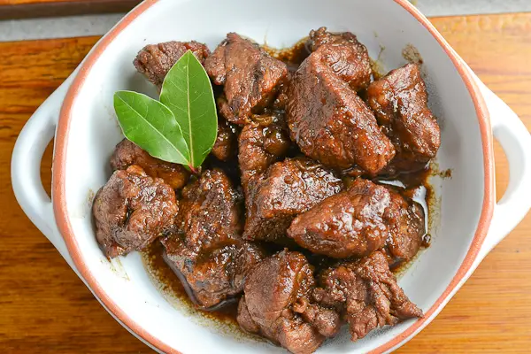

Adobo Recipe

Philippine adobo is a Spanish-influenced meat dish consisting of a tangy sauce of vinegar, garlic, soy sauce and black pepper. Vinegar is a common ingredient found in many Filipino dishes and it’s one of the main ingredients in any adobo. Some may regard Adobo to be the national dish of the Philippines because it is so popular. There are so many different versions of this dish around as people have adapted this dish to their own taste. One such variant is a more modern take that does not use soy sauce (adobong puti or white adobo).
Ingredients
- 2 pounds pork belly, cut into 2-inch cubes
- 1 onion, peeled and sliced thinly
- 1 head garlic, peeled and minced
- 2 bay leaves
- 1 teaspoon salt
- ½ teaspoon pepper
- 1 tablespoon oil
- 1 cup vinegar
- ½ cup soy sauce
- 1 cup water
Instructions
- In a bowl, combine pork, onions, garlic, bay leaves, salt, and pepper. Place in the refrigerator and marinate for about 30 minutes.
- In a wide, heavy-bottomed skillet over medium heat, heat oil. Add meat mixture and cook, turning occasionally, until pork is lightly browned.
- Add vinegar and allow to boil, uncovered and without stirring, for about 3 to 5 minutes.
- Add soy sauce and water and stir to combine. Allow to a boil for another 3 to 5 minutes.
- Lower heat, cover, and simmer for about 40 to 50 minutes or until meat is fork-tender and sauce is reduced.
- Season with salt and pepper to taste. Serve hot.